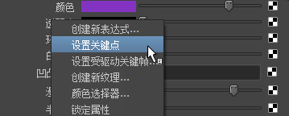

有关材质节点属性的描述，请参见表面材质、置换材质和体积材质。
对属性设置动画
- 在 Maya 的主窗口中，将时间滑块设定到某一帧。
- 在节点的“属性编辑器”(Attribute Editor)中，在要设定关键帧的属性（如“颜色”(Color)属性）的标签上单击鼠标右键，然后从弹出菜单中选择“设定关键帧”(Set Key)来创建关键帧。

- 将时间滑块设定到另一帧。
- 调整该属性，并设定另一个关键帧。例如，单击“Blinn”材质的颜色属性，并在每次设置新关键帧时，从“颜色”(Color)选择器中选择一种不同的颜色。
- 播放动画。视图中会以动画形式显示渲染属性所指定给的曲面（例如，“Blinn”颜色在设置的每个关键帧处都会改变）。